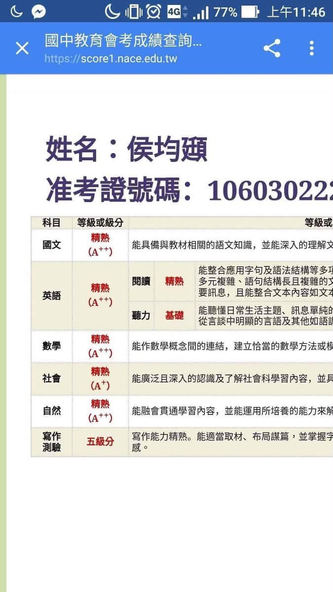
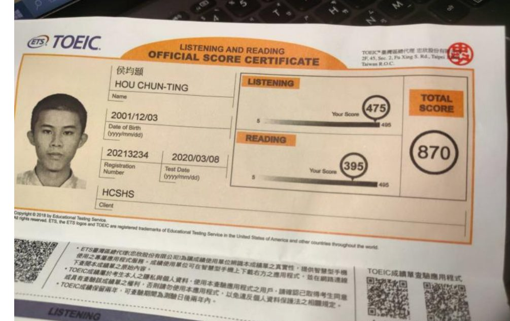
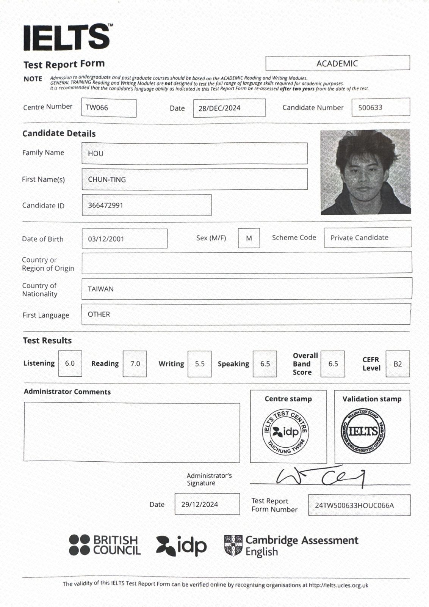
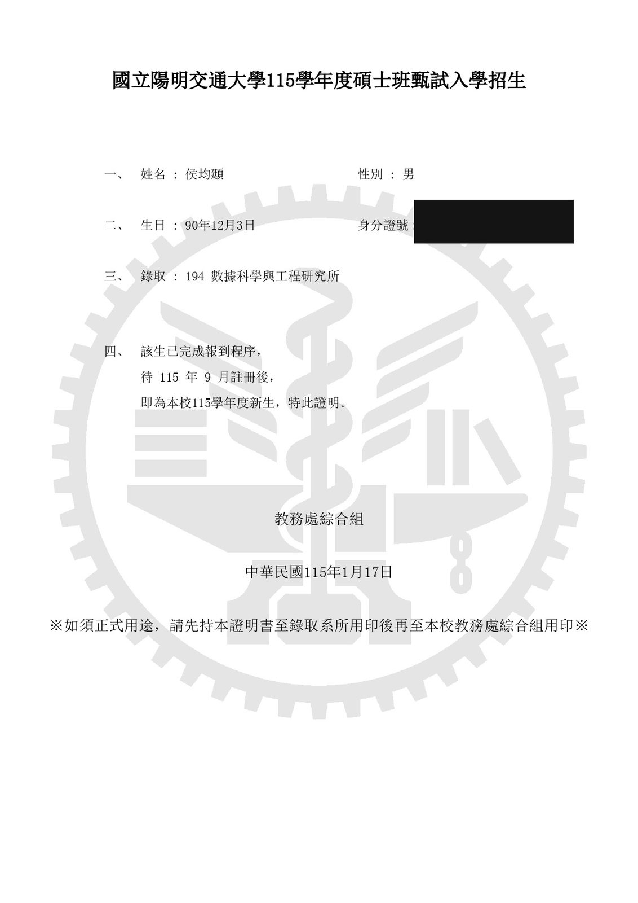
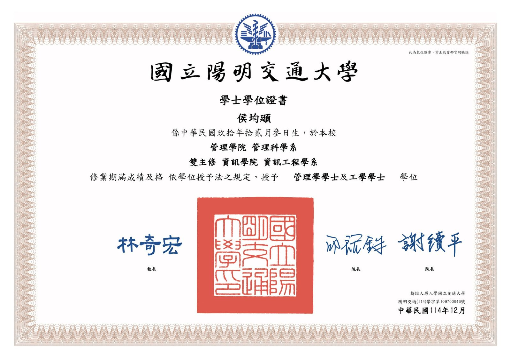

數理能力有硬底子
國中 AMC8、高中 AMC12 皆達 PR97 並取得 AIME 邀請資格；會考 5A9+（見下方會考與學歷證明）。我習慣把複雜問題拆成幾個可以理解的小步驟，這也是我教數學最重視的能力。
新竹・竹北｜國小～高中數學為主・英文・自然・程式（實體一對一）
我是侯均頲，國立陽明交通大學數據科學與工程研究所碩士班， 大學完成管理科學系＋資訊工程學系雙主修。 國中會考 5A9+，國中 AMC8、高中 AMC12 皆達 PR97， 取得 AIME 邀請資格。我希望孩子不是記住某一題怎麼算，而是理解「為什麼這樣想」， 之後遇到新題目也能自己拆解。
可以先告訴我孩子的年級、目前卡住的章節與最近考卷狀況。先了解需求，再決定是否試教。
國中 AMC8、高中 AMC12 皆達 PR97 並取得 AIME 邀請資格；會考 5A9+（見下方會考與學歷證明）。我習慣把複雜問題拆成幾個可以理解的小步驟，這也是我教數學最重視的能力。
陽明交大數據科學與工程研究所碩士班，大學完成管理科學＋資訊工程雙主修。下方可直接查看會考、入學、畢業與英文檢定證明，也能連到我的完整作品集。
曾於一對一補習班教授國中數學，也有國小英文一對一教學經驗。孩子卡住時，我會先找出是觀念、計算、題意還是步驟出了問題，再換一種方式講到能自己做。
不是同一套解法講到底。有人需要圖像，有人需要把文字題翻成算式，有人其實只是前面觀念有洞。我會依當下反應調整節奏與解法。
可直接使用孩子的學校課本、講義與考卷；每堂課後用 LINE 簡短回報今天進度、主要問題與回家練習，家長不用猜「今天到底上了什麼」。
除了這次考試，我也會把訂正、複習、整理錯題與時間安排一起教。家教不是永遠陪寫題目，而是逐步把學習能力交回孩子手上。
特別適合高年級與升國中銜接：補觀念漏洞、穩定計算、拆解文字題與應用題，建立之後學分數、比例、代數時需要的數感與邏輯。
觀念理解 → 題型拆解 → 段考與會考實戰。先找弱點章節，再針對錯題原因補強，不靠無止境題海硬撐。
高一、高二數學進度與觀念補強，可依學校教材與考試安排調整；物理可依學生程度與需求討論。
國小高年級到高中皆可討論。重視文法邏輯與單字累積，多益 870、雅思 6.5；也有國小英文一對一教學經驗。
以理解因果與題目條件為主，協助整理理化觀念、公式使用時機與常見題型，不只背結論。
Python／C++ 基礎、程式邏輯與 AI 工具正確使用。適合對資訊有興趣的孩子延伸探索，不會把 AI 當成抄答案捷徑。
核心其實不花俏：把問題診斷清楚、講到懂，再用適量練習把它變成孩子自己的能力。
我的原則很簡單：先懂，再熟，最後才快。 對數學尤其如此。小學高年級如果只是把步驟背起來，進到國中代數後很容易一次爆出來； 所以我會先把孩子現在的觀念缺口找出來，再練到能自己解釋、自己做。 分數當然重要，但真正穩定的分數，通常是理解和習慣累積出來的。
所有資歷皆有真實文件可查，點擊圖片即可放大檢視；更完整的學術、實習與作品背景也可從個人網站確認。





我不是走「教了十幾年、固定一套講法」的資深家教路線。目前有一對一補習班國中數學與國小英文一對一教學經驗。我的優勢是數理與資訊背景扎實、溝通距離近，也會仔細觀察孩子到底卡在哪裡。最直接的方式仍然是安排試教，讓孩子實際上過再判斷適不適合。
試教：國小 300 元、國中 400 元。長期一般學科：國小 NT$500–600／小時、國中 NT$600–700／小時；高中物理、程式或 AI 類課程可依內容再討論。價格透明、不綁約，也不推銷課程包。
可以。試教費用為國小 300 元、國中 400 元，讓孩子先感受講解方式，也讓我確認目前程度、主要弱點與適合的進度。試教後再決定是否長期配合。
適合。小六其實是很適合整理數學基礎的時間點，可以先處理分數、小數、比與比例、速率、幾何、文字題等容易留下漏洞的地方，再開始建立國中代數需要的符號感與邏輯，不需要為了超前而硬趕進度。
新竹市、竹北為主，可到府教學或約圖書館等公共空間。目前主要以實體教學為主。
通常不需要。可以直接使用孩子的學校課本、講義、作業與考卷，先對準學校進度。若需要額外補強，我會依弱點補充練習或整理重點。
平日晚上與週末皆可討論，每週固定時段為主；段考前若雙方時間允許，也可彈性加課。
每堂課後我會用 LINE 簡短回報：今天上了什麼、孩子主要卡在哪裡、回家建議完成哪些練習。考試後也能一起看錯題與調整方向。
可以先傳孩子年級、想加強的科目、最近最常錯的內容與希望時段，我會先確認是否適合再安排。